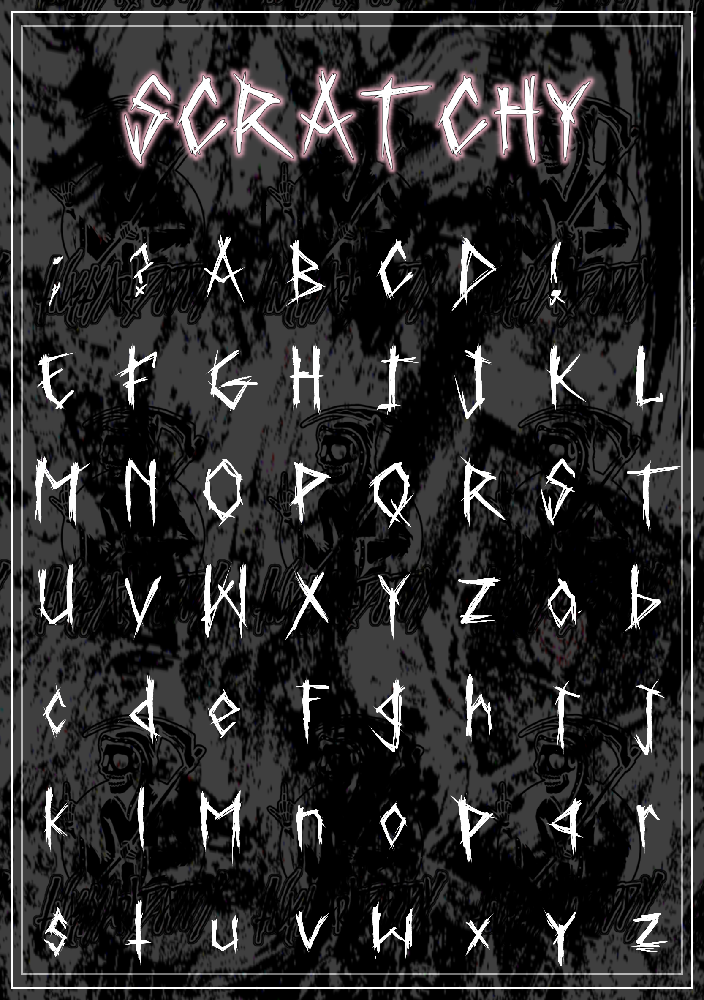

TnastyArtDaddy says "here you go.. its free.."

This image showcases the full aesthetic and styling of the Scratchy typeface.
Download the Scratchy Font Files
Download OTF (Desktop)
Download TTF (Desktop/Web)